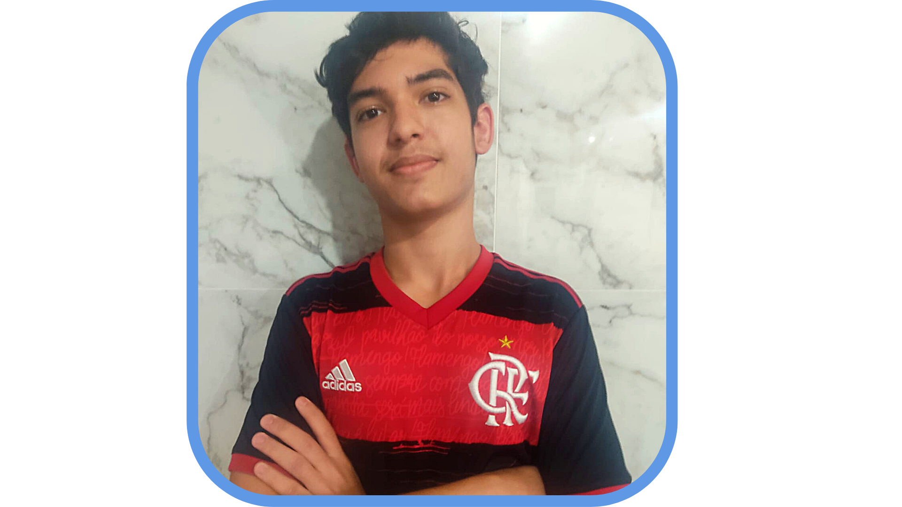

-
Rafael Lopes

-
Guilherme Motta

-
Guilherme ficou responsavel pela parte do design do site, como o desenho dele.
-
Rafael Lopes ficou com a parte de fazer o site funcionar, utilizando o jquery para a interação do cliente ao site, e o html junto com css para o site ficar do jeito que queriamos.
-
Este site foi desenvolvido para a conclusão de um trabalho da escola técnica 3D, com o intuito de fazer um sorteio de 6 números aleatórios.